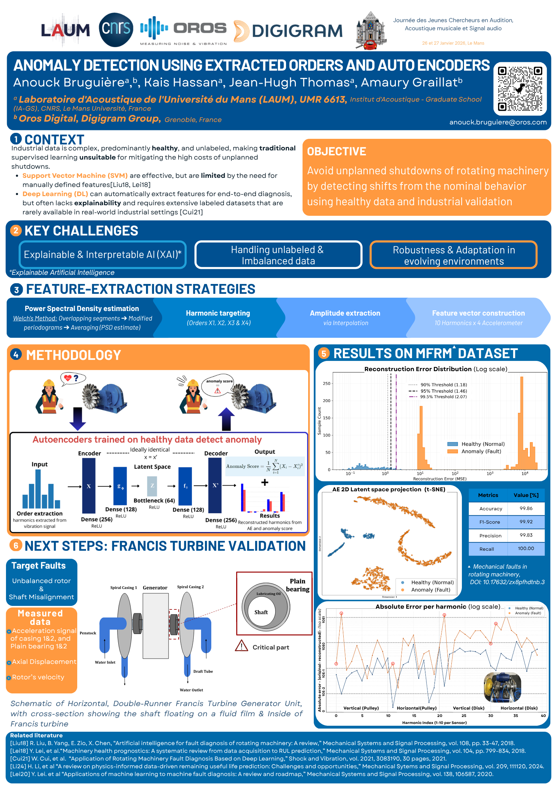
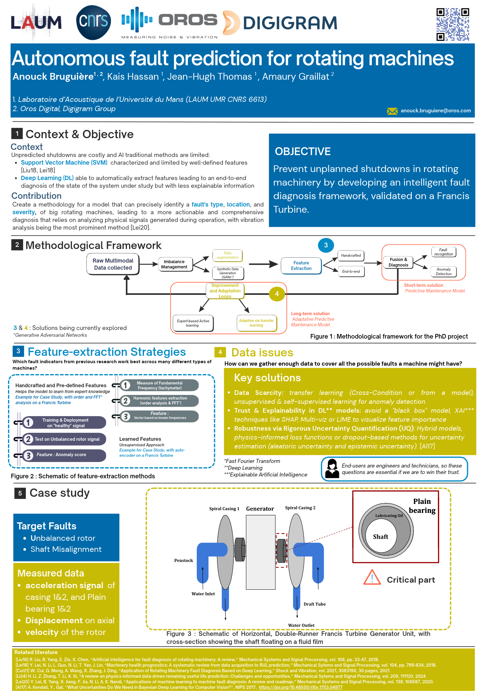

Posters
Click a poster to open it in full size.
-

Anomaly detection using extracted orders and autoencoders
JJCAAS, Le Mans, January 2026
full size -

Autonomous fault prediction for rotating machines
PAISS, Inria, September 2025
Best poster award
full size